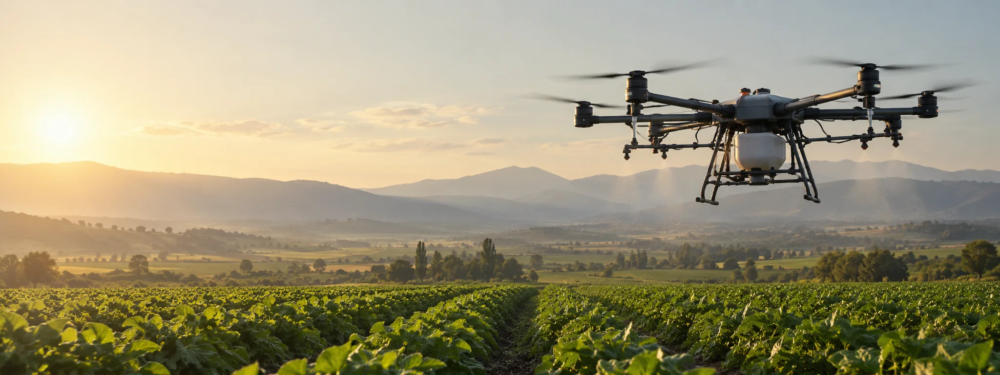

ÜRÜNLER / İHA SİSTEMLERİ
Konsept görselİHA Sistemleri
Farklı kullanım senaryolarına uyarlanabilir hava aracı ve alt sistem çalışmaları.
GELİŞTİRME YAKLAŞIMI
Göreve göre şekillenen platformlar.
İHA sistemlerinde görev tanımı tasarımın başlangıç noktasıdır. İhtiyacı anlamak, sistem mimarisini kurmak ve bileşenleri bir arada değerlendirmek temel yaklaşımımızdır.
Güncel durumÇalışmalarımız geliştirme aşamasındadır. Model adı, performans ve teknik değerleri doğrulandıktan sonra paylaşacağız.

Görsel temsili olarak üretilmiştirODAK ALANLARIBirlikte çalışan
Birlikte çalışan
bileşenler.
- 01
Platform mimarisi
Görev gereksinimlerine uygun hava aracı tasarımı.
- 02
Alt sistemler
İtki, kontrol ve faydalı yük uyumunu değerlendirme.
- 03
Geliştirilebilirlik
Test ve iyileştirmeye açık mühendislik yaklaşımı.
DİĞER ÜRÜNLER
Ekosistemi keşfedin.
BİRLİKTE ÇALIŞALIM
İletişime geçBir fikri birlikte geliştirelim.
İhtiyacınızı ve kullanım senaryonuzu konuşmak için bizimle iletişime geçin.